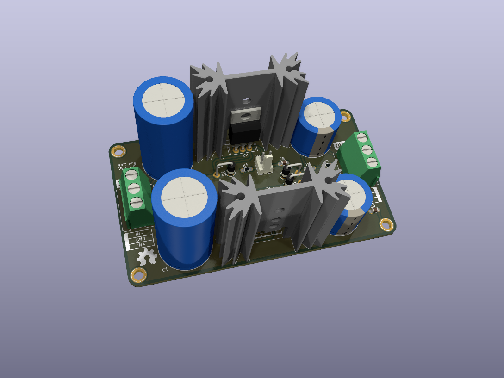
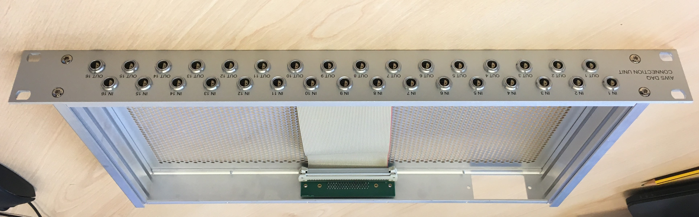

Dual Voltage Regulator
Dual fixed voltage regulator module based on LM78XX / LM79XX.


Features
- +7-38V input -> +5-24V output, -7-30V input -> -5-15V output.
- Output current: up to 1.5A.
- Voltage regulators: 1 x LM78XX, 1 x LM79XX.
- Reverse voltage protection.
- On board and external power LED indicators.
Data Acquisition Connection Unit
Signal connection unit designed for use with a multi-channel scientific data acquisition system.

Features
- 1U, 19" rack mount aluminium chassis.
- Designed for +/- 10V differential input signals.
- x16 inputs (dual pin LEMO connectors) on front.
- x16 outputs (dual pin LEMO connectors) on front.
- x16 outputs (68 way SCSI connector) on rear.
- Transient protection on all inputs (bi-directional TVS diodes: +/-30V clamp, 1.5kW peak pulse).
- Optional IEC mains inlet connector, if internal power is required.